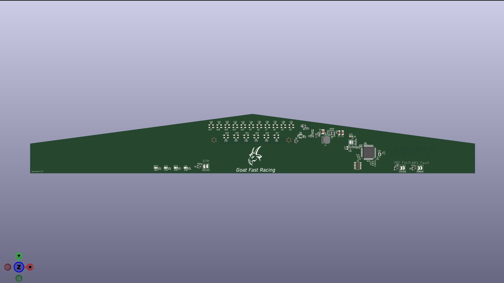

PROJECT / ELECTRONICS
Current project: FSAE car dashboard
A short summary of the project, the problem it solves, and what you set out to build.
Tools: KiCad, LTspice, LTspice
Overview
The purpose of this project is to design a custom printed circuit board (PCB) for dashboard of the car to provide critical information to the driver using a variety of lights contoled by a STM32 microcontroller.
My Contribution
- Designed the schematic and selected components.
- Created the PCB layout and routed the signals.
- Currently working on testing and debugging the hardware.
Design Requirements
,- Display critical information to the driver in a clear and concise manner.
- Withstand the harsh conditions of a race car environment.
- Interface with the car's existing electronics and sensors.
- Waterproof to allow driving in wet conditions.
- Have switches to control ready to drive state and future components on car.


Testing and Results
Needs to be manufactured to undergo full validation.
What I Learned
This is the first PCB I have made that needed to be waterproof causing additional design considerations. The other first for me on this project was the use of four a four layer PCB design, in the past price has been to much of a concern to use more than two layers. The four layer design allowed for better routing and signal integrity. This is the first time I have layed out a voltage regulator circuit on a PCB, which was a good learning experience.